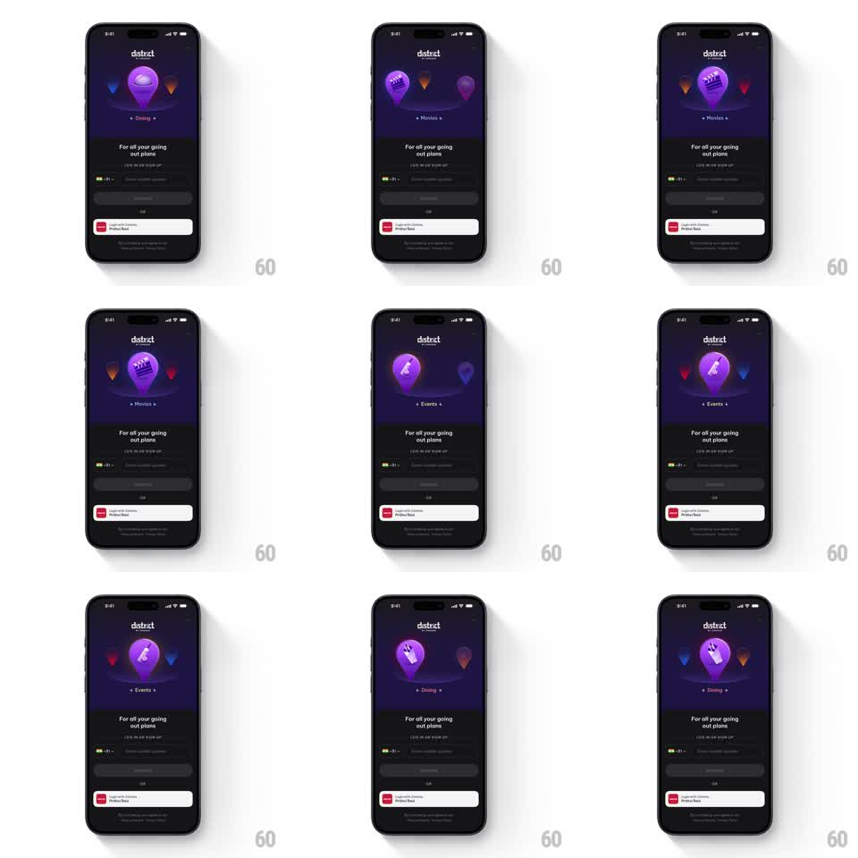

Media
Frame-by-frame

Rebuild this animation 1:1: District's login carousel - a glowing 3D map-pin carousel rotates through Dining, Movies, and Events above the sign-in form, each front pin swapping its icon as it lands.

Rebuild this animation 1:1: District's login carousel - a glowing 3D map-pin carousel rotates through Dining, Movies, and Events above the sign-in form, each front pin swapping its icon as it lands.
## Integration
Integration: stack-agnostic spec - springs given as stiffness/damping, timed motions as duration + curve; map every value to your framework and animation library of choice.
## Scene
District login, dark: "district" wordmark top-center, the pin carousel stage below it (a large glowing purple pin front-center on a circular track, blue and orange pins visible at the sides), a small category label under the pin ("Dining" / "Movies" / "Events" with side dots). Below: "For all your going out plans", phone/email fields, and the social sign-in buttons.
## Motion spec
Pattern: auto-rotating 3D pin carousel with a cycling category label.
- The carousel auto-advances every 2.5s: pins travel along the circular track - the front pin swings off to the left side (scaling 1 -> 0.55, dimming to 60%, dropping its glow) while the right-side pin swings into the front slot (scaling 0.55 -> 1, brightening, glow blooming in) - 600ms, ease-in-out.
- As a pin lands front-center its inner icon crossfades to the category glyph (cutlery for Dining, clapperboard for Movies, ticket for Events) in 200ms, and it does a small celebratory bounce (scale 1 -> 1.06 -> 1, 300ms).
- The label under the track crossfades to the new category name (250ms) with a slight vertical roll (8px).
- The front pin's glow pulses gently the whole time it leads (opacity 0.6 -> 1 -> 0.6, 2s).
- The login form and buttons below are completely static - all motion lives in the carousel stage.
## Calibration
- Exactly three pins on the track; the side pins peek symmetrically at +/-70px from center.
- The purple pin leads every rotation - side pins keep their own colors (blue, orange) as they cycle through.
## Reduced motion
Category crossfade in place (front pin swaps icon + label, 300ms) without track rotation.
## Don't miss
- The track reads as a real circle in perspective - back pins sit higher and smaller.
- The glow is a soft radial bloom on the ground beneath the front pin, not a drop shadow.